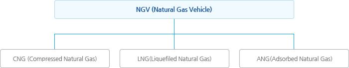
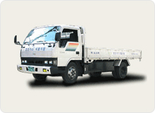
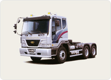
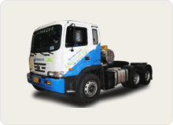
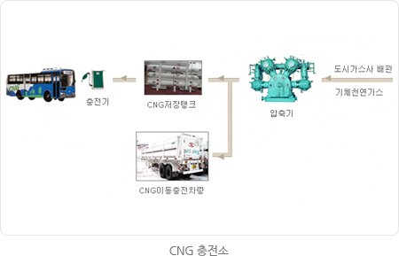
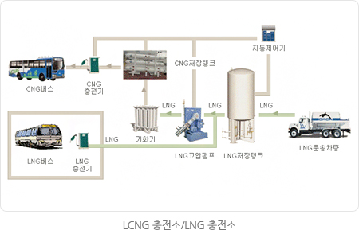
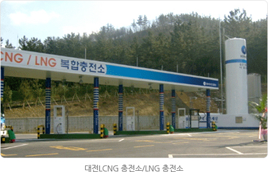
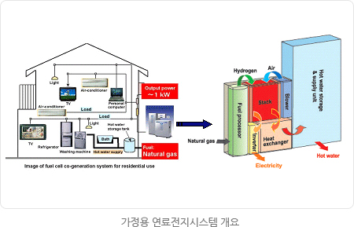
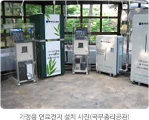
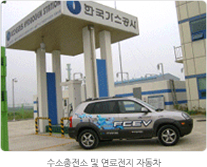

신에너지기술
천연가스 차량(NGV : Natural Gas Vehicles)
차량연료로서의 천연가스
- 천연가스를 자동차 엔진에 적용하면 배출가스 저감효과가 현저하며, 연소 한계범위가 넓어서 희박연소가 가능하여 좋은 연비를 실현합니다. 또한 옥탄가가 130정도로 높기 때문에 엔진 압축비를 높일 수 있어 타 대체 연료엔진에 비해 효율이 좋고 연료 소비율을 향상시킬 수 있습니다.
- 엔진 연소실과 연료 공급 계통에 퇴적물이 적어 윤활유나 엔진 오일, 필터의 교환 주기가 연장되며 가스연료의 공급으로 인한 밸브와 밸브시트의 마모성을 보완하면 엔진수명도 비교적 깁니다.
차종별 오염물질 배출량 비교
| 경유차 | 휘발유차 | 천연가스차 | LPG차 | |
|---|---|---|---|---|
| 매연(PM) | 100 | 10 | 2 | 2 |
| NOx | 100 | 20 | 15 | 25 |
| CO | 20 | 100 | 25 | 45 |
| HC | 90 | 100 | 35 | 45 |
| CO2 | 90 | 100 | 80 | - |
- 주) 매연, NOx는 경유차를 CO, HC, CO2는 휘발유차를 기준으로 함. (출처:환경부)
NGV의 분류
천연가스차량(NGV)는 다음의 도표와 같이 연료저장방식에 따라 크게 세가지 종류로 나누어집니다.

- 압축천연가스자동차(CNG) : 천연가스를 19.7MPa(200기압) 이상으로 압축, 저장하여 사용
- 액화천연가스자동차(LNG) : 천연가스를 액체(-150 ~ -120℃)로 저온용기에 저장하여 사용
- 흡착천연가스자동차(ANG) : 천연가스를 용기내의 흡착제에 흡착, 저장하여 사용
천연가스 자동차 개발
- CNG 전소차량 개조기술 개발(1.5톤, 3.5톤)
- LNG 대형차량 요소기술 개발(트랙터, 버스 개발)
- LNG 대형 혼소차량 개발(트랙터, 트럭)
- 
- 
- 
보급현황
- 현재 전국적으로 천연가스 자동차는 약 4만대(2012. 12 기준)가 운행되고 있으며 대부분 시내버스와 청소차 중심이며 최근 소형차의 적용이 확대되고 있다.
- CNG 버스는 1992년 한국가스공사에서 개발에 착수해 1996년 시운전에 성공하였으며, 1998년 5월에 인천과 안산에 각각 2대가 처음으로 운행을 시작, 2000년 6월부터 서울시를 시작으로 본격 도입되었습니다. 전 세계적으로 NGV는 각국 정부에서 저공해자동차 보급 확대의 가장 현실적인 대안으로 여기고 적극 추진하고 있는 실정입니다.
- LNG 차량 보급을 위해 대형 LNG 차량 개발을 완료하였으며 관련법규도 정비하였습니다. 향후 보조금 및 인프라 구축, 경제성, 안전성 등을 평가해 LNG 트럭과 LNG 버스를 보급할 계획입니다.
- LNG 혼소 화물차는 기존 경유 화물차에 비해 연료경제성이 우수하고 배출가스 저감효과도 뛰어나 친환경물류 수송수단으로 보급이 확대될 것으로 기대 됩니다. 특히 CO2 저감효과가 10%이상 나타나고 있어 온실가스 저감에도 효과적입니다.
- 천연가스 자동차의 환경성을 더욱더 개선하기위한 HCNG 자동차 기술개발이 진행되고 있으며 향후 수소시대를 대비하기위한 수소충전 인프라에 대한 연구도 준비하고 있습니다.
CNG충전소 및 LCNG충전소
CNG차량의 가스충전을 위한 충전소는 크게 압축기를 이용한 CNG형식과 LNG펌프를 이용한 LCNG형식이 있습니다.
CNG 충전소
도시가스 배관에서 천연가스를 직접 공급받아 압축기로 압축하여 고압 가스저장 용기에 저장해 두었다가 충전하는 방식입니다. 가스를 배관으로 공급받으므로 가스 공급이 수월하며, 가스 운반에 드는 제반의 비용이 절감됩니다. 그러나 충전소가 가스배관과 멀리 떨어져 있는 경우는 배관 설치비가 많이 들며, 고압 압축기에 의한 소음과 전력소비가 큰 단점이 있습니다.

LCNG 충전소


수소에너지/연료전지
- 화석에너지는 자원의 유한성으로 인해 점차 고갈되어 가고 있고, 심각한 환경오염원으로 대두되고 있어 근래 이를 대신할 신재생에너지의 필요성이 급격히 부각되고 있습니다.
- 신재생에너지중 수소는 환경오염물질 배출이 없고, 에너지 저장 및 다른 형태의 에너지로 변환이 용이해 가능성이 가장 높은 21세기 미래 에너지원으로 떠오르고 있습니다.
- 우리 공사에서는 2000년부터 신재생에너지기술개발의 일환으로 천연가스로부터 수소제조 및 연료전지 관련 연구개발을 추진하고 있습니다.
연료 전지란 : 수소를 원료로 하여 연소과정 없이 화학적 에너지를 직접 전기 에너지로 바꾸어주는 고효율의 무공해 에너지 변환 장치(발전장치)
- 천연가스로부터 수소를 제조하는 수소제조장치 개발, 연료전지자동차에 수소를 공급해주는 수소충전소 실증연구 및 건물용 연료전지의 보급기반 구축을 위해 가정용 연료전지 보급 및 수십 kW급 건물용 연료전지개발 연구 등을 적극적으로 추진하고 있으며, 이를 바탕으로 향후 수소/연료전지 기술개발 및 보급활성화에 선도적인 역할을 수행하고자 합니다.



수소스테이션(수소충전소)
- 수소충전소란 연료전지를 탑재한 차량에 연료인 수소를 충전해주는 시설로서, 수소생산방식, 충전방식, 이동성 여부 및 수소생산을 위한 에너지원 등에 따라 다양한 설비와 시스템을 갖추게 됩니다.
- 다른 시스템에 비해 저렴하게 수소생산이 가능한 정치형 천연가스증기개질 수소충전소를 건설하여 실증연구를 진행하고 있습니다.
- 이러한 수소충전소는 화석원료로부터 직접 수소를 제조하는 연료처리장치, 고순도의 수소를 분리하기 위한 분리기(PSA: Pressure Swing Adsorption), 생산된 수소를 저장하는 저장장치 및 수소를 연료전지 자동차에 충전하는 디스펜서로 이루어져 있습니다.